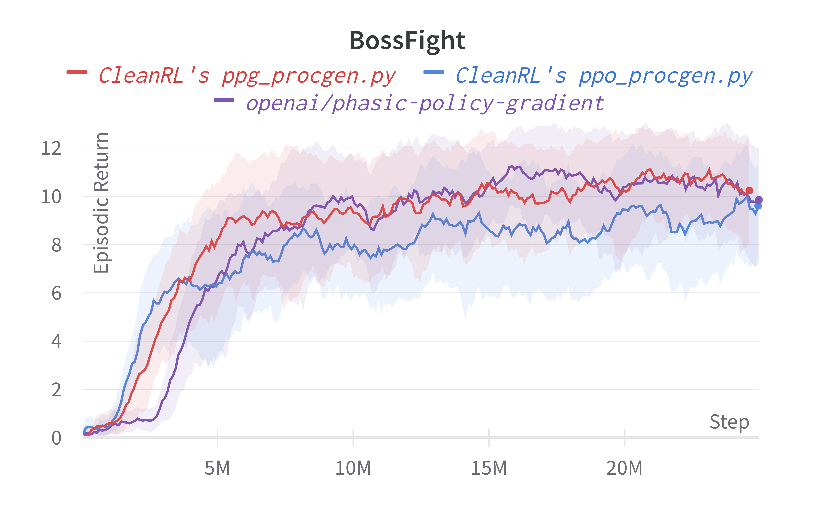
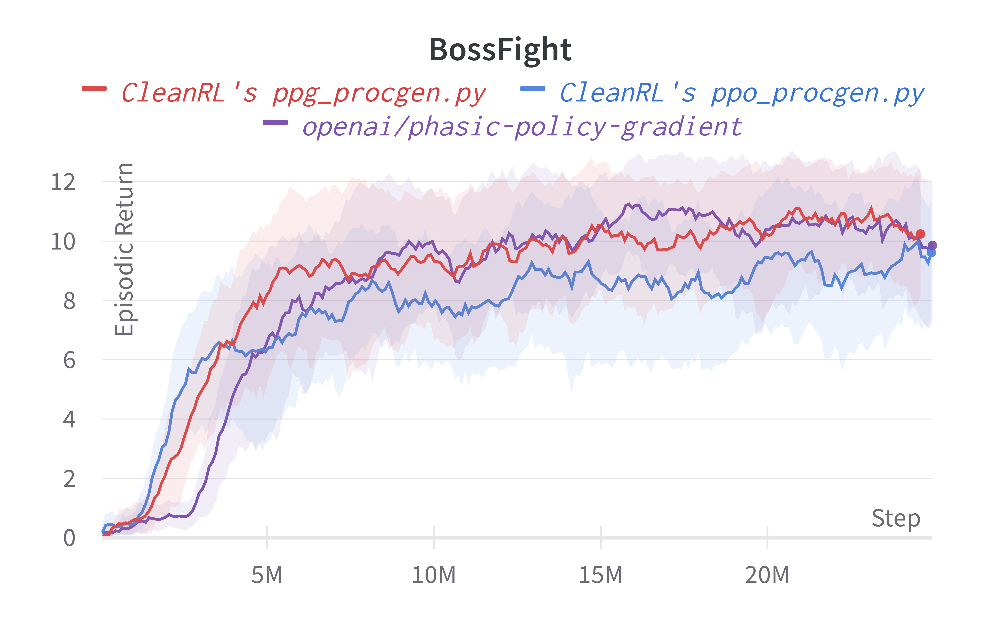
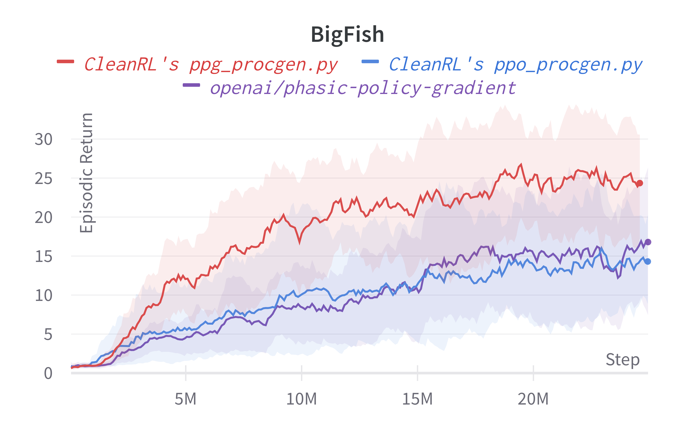
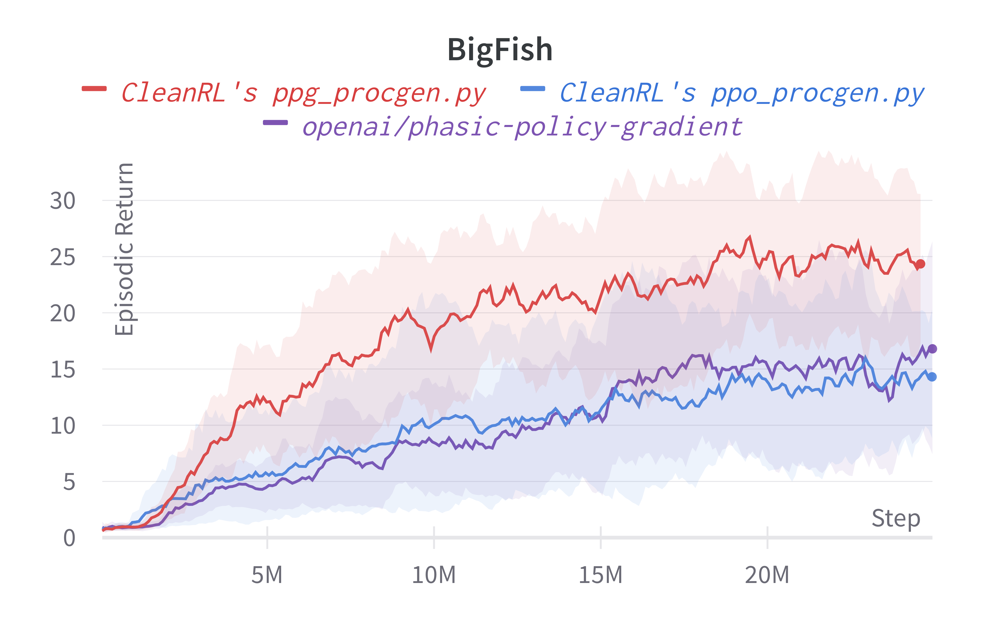

Phasic Policy Gradient (PPG)
Overview
PPG is a DRL algorithm that separates policy and value function training by introducing an auxiliary phase. The training proceeds by running PPO during the policy phase, saving all the experience in a replay buffer. Then the replay buffer is used to train the value function. This makes the algorithm considerably slower than PPO, but improves sample efficiency on Procgen benchmark.
Original paper:
Reference resources:
- Code for the paper "Phasic Policy Gradient" - by original authors from OpenAI
The original code has multiple code level details that are not mentioned in the paper. We found these changes to be important for reproducing the results claimed by the paper.
Implemented Variants
| Variants Implemented | Description |
|---|---|
ppg_procgen.py, docs |
For classic control tasks like CartPole-v1. |
Below are our single-file implementations of PPG:
ppg_procgen.py
ppg_procgen.py works with the Procgen benchmark, which uses 64x64 RGB image observations, and discrete actions
Usage
poetry install -E procgen
python cleanrl/ppg_procgen.py --help
python cleanrl/ppg_procgen.py --env-id "bigfish"
Explanation of the logged metrics
Running python cleanrl/ppg_procgen.py will automatically record various metrics such as actor or value losses in Tensorboard. Below is the documentation for these metrics:
Same as PPO:
charts/episodic_return: episodic return of the gamecharts/episodic_length: episodic length of the gamecharts/SPS: number of steps per second (this is initially high but drops off after the auxiliary phase)charts/learning_rate: the current learning rate (annealing is not done by default)losses/value_loss: the mean value loss across all data pointslosses/policy_loss: the mean policy loss across all data pointslosses/entropy: the mean entropy value across all data pointslosses/old_approx_kl: the approximate Kullback–Leibler divergence, measured by(-logratio).mean(), which corresponds to the k1 estimator in John Schulman’s blog post on approximating KLlosses/approx_kl: better alternative toolad_approx_klmeasured by(logratio.exp() - 1) - logratio, which corresponds to the k3 estimator in approximating KLlosses/clipfrac: the fraction of the training data that triggered the clipped objectivelosses/explained_variance: the explained variance for the value function
PPG specific:
losses/aux/kl_loss: the mean value of the KL divergence when distilling the latest policy during the auxiliary phase.losses/aux/aux_value_loss: the mean value loss on the auxiliary value headlosses/aux/real_value_loss: the mean value loss on the detached value head used to calculate the GAE returns during policy phase
Implementation details
ppg_procgen.py includes the
-
Full rollout sampling during auxiliary phase - ( phasic_policy_gradient/ppg.py#L173) - Instead of randomly sampling observations over the entire auxiliary buffer, PPG samples full rullouts from the buffer (Sets of 256 steps). This full rollout sampling is only done during the auxiliary phase. Note that the rollouts will still be at random starting points because PPO truncates the rollouts per env. This change gives a decent performance boost.
-
Batch level advantage normalization - PPG normalizes the full batch of advantage values before PPO updates instead of advantage normalization on each minibatch. ( phasic_policy_gradient/ppo.py#L70)
-
Normalized network initialization - ( phasic_policy_gradient/impala_cnn.py#L64) - PPG uses normalized initialization for all layers, with different scales.
- Original PPO used orthogonal initialization of only the Policy head and Value heads with scale of 0.01 and 1. respectively.
- For PPG
- All weights are initialized with the default torch initialization (Kaiming Uniform)
- Each layer’s weights are divided by the L2 norm of the weights such that the weights of
input_channelsaxis are individually normalized (axis 1 for linear layers and 1,2,3 for convolutional layers). Then the weights are multiplied by a scale factor. - Scale factors for different layers
- Value head, Policy head, Auxiliary value head - 0.1
- Fully connected layer after last conv later - 1.4
- Convolutional layers - Approximately 0.638
- The Adam Optimizer's Epsilon Parameter -( phasic_policy_gradient/ppg.py#L239) - Set to torch default of 1e-8 instead of 1e-5 which is used in PPO.
- Use the same
gammaparameter in theNormalizeRewardwrapper. Note that the original implementation from openai/train-procgen uses the defaultgamma=0.99in theVecNormalizewrapper butgamma=0.999as PPO's parameter. The mismatch between thegammas is technically incorrect. See #209
Here are some additional notes:
- All the default hyperparameters from the original PPG implementation are used. Except setting 64 for the number of environments.
- The original PPG paper does not report results on easy environments, hence more hyperparameter tuning can give better results.
- Skipping every alternate auxiliary phase gives similar performance on easy environments while saving compute.
- Normalized network initialization scheme seems to matter a lot, but using layernorm with orthogonal initialization also works.
- Using mixed precision for auxiliary phase also works well to save compute, but using on policy phase makes training unstable.
Also, ppg_procgen.py differs from the original openai/phasic-policy-gradient implementation in the following ways.
- The original PPG code supports LSTM whereas the CleanRL code does not.
- The original PPG code uses separate optimizers for policy and auxiliary phase, but we do not implement this as we found it to not make too much difference.
- The original PPG code utilizes multiple GPUs but our implementation does not
Experiment results
To run benchmark experiments, see benchmark/ppg.sh. Specifically, execute the following command:
Below are the average episodic returns for ppg_procgen.py, and comparison with ppg_procgen.py on 25M timesteps.
| Environment | ppg_procgen.py |
ppo_procgen.py |
openai/phasic-policy-gradient (easy) |
|---|---|---|---|
| Starpilot (easy) | 34.82 ± 13.77 | 32.47 ± 11.21 | 42.01 ± 9.59 |
| Bossfight (easy) | 10.78 ± 1.90 | 9.63 ± 2.35 | 10.71 ± 2.05 |
| Bigfish (easy) | 24.23 ± 10.73 | 16.80 ± 9.49 | 15.94 ± 10.80 |
Warning
Note that we have run the procgen experiments using the easy distribution for reducing the computational cost. However, the original paper's results were condcuted with the hard distribution mode. For convenience, in the learning curves below, we compared the performance of the original code base (openai/phasic-policy-gradient the purple curve) in the easy distribution.
Learning curves:


 

 

Info
Also note that our ppo_procgen.py which closely matches implementation details of openai/baselines' PPO which might not be the same as openai/phasic-policy-gradient's PPO. We take the reported results from (Cobbe et al., 2020)1 and (Cobbe et al., 2021)2 and compared them in a google sheet (screenshot shown below). As shown, the performance seems to diverge a bit. We also note that (Cobbe et al., 2020)1 used procgen==0.9.2 and (Cobbe et al., 2021)2 used procgen==0.10.4, which also could cause performance difference. It is for this reason, we ran our own openai/phasic-policy-gradient experiments on the easy distribution for comparison, but this does mean it's challenging to compare our results against those in the original PPG paper (Cobbe et al., 2021)2.

Tracked experiments and game play videos:
-
Cobbe, K., Hesse, C., Hilton, J., & Schulman, J. (2020, November). Leveraging procedural generation to benchmark reinforcement learning. In International conference on machine learning (pp. 2048-2056). PMLR. ↩↩
-
Cobbe, K. W., Hilton, J., Klimov, O., & Schulman, J. (2021, July). Phasic policy gradient. In International Conference on Machine Learning (pp. 2020-2027). PMLR. ↩↩↩